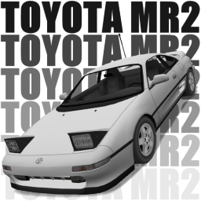
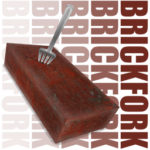
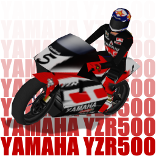
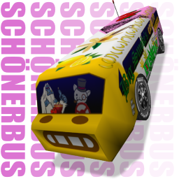
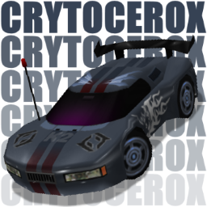
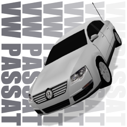
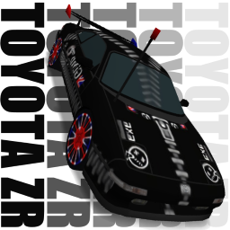
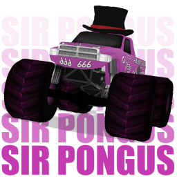
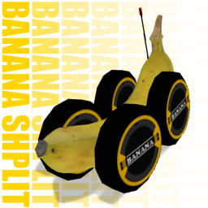
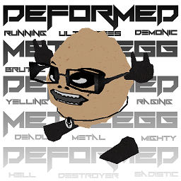

Re-Volt Cars
Toyota MR2
 This is a high-poly conversion from NFS4, designed to handle like a heavy, electric R/C car with a metal body.
Download (v18.0526)
Brickfork
 It was the year 2017 of the Common Era. The invading armada of the fearsome Fidget Spinners took Earth by the storm, devastating everything in their path. However, the valiant and united forces of humanity fought back relentlessly, ultimately triumphant in their pursuit of victory.
Biometal, one of humanity's greatest heroes, scoffed at the invaders as they fled back to the hell from whence they came: "What'z next? A brick with a fork wedged into it?"
And so it was.
Download (v18.0505)
Yamaha YZR500
 This vehicle has been converted to Re-Volt with the aim of introducing motorcycles to the game. While unrealistically nimble and extremely clumsy with weapons, it has, indeed, achieved its goal.
Download (v18.0429)
Pocket Camper
Conversion from Animal Crossing: Pocket Camp.
Download (v18.0413)
Schönerbus
 The bus is nice.
Download (v18.0329)
Crytocerox
 This is a combination between StrixMidnight's Rhino Roadster K2 and Kipy's Kookaburra.
Crytocerox distinguishes itself through its high acceleration and excellent cornering ability, which makes up for its inferior top speed. The car may prove difficult to master, but it can provide a challenge even to Pro cars when handled skillfully.
Download (v17.1127)
Volkswagen Passat
 A high-poly Volkswagen Passat, carefully crafted to appear as a low-poly model.
Download (v17.0723)
Toyota ZR
 This is a remodel, remap and repaint of the Toyota MR2. It was created as a gift for zipperrulez.
Download (v17.0717)
Fidget Spinner
Behold, the dreadful Fidget Spinner! This terrifying creation has been known to strike both tumultuous passion and undeniable hatred into the hearts of men and women alike. Get your own Fidget Spinner today, or curse its invention and inevitable spread to the game!
Download (v17.0614)
PORK MOUNTAIN
 Good day! Lay thine eyes on this majestic work of art, fashioned for the All's Fair competition. Top hat not sold separately.
Download (v17.0312)
Banana Shplit
 Do you like bananas? Do you like eating bananas? Do you like holding bananas? Do you like placing bananas on a pedestal and admiring them for hours as if they're your greatest treasure?
Well, guess what? Today is the best day of your life, because you can now RACE bananas! Yes, you heard right! Coming from Unconventional Racing Vehicles Inc. (subsidiary to Bliggity Blurgh Inc.) the brand-new Banana Shplit 2016! Now equipped with a proper antenna, reworked wheels, a fancy carbox and an updated readme with a Q&A section!
Download (v16.0910)
Deformed Metalegg
 I have no explanation for this.
Download (v13.0518)